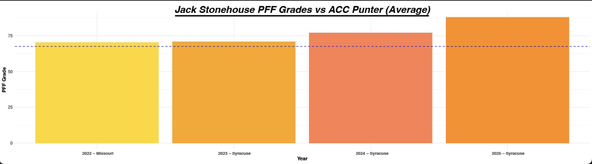

Writing


Graphic Pitches & Data Visualization



×

I am junior at Syracuse University's S.I. Newhouse School of Public Communications, majoring in Magazine, News and Digital Journalism. As a Digital Editor for Syracuse's nonprofit, student-run newspaper The Daily Orange I help manage our digital content. My responsibilties include pitching graphics, headlines, tweets and running the D.O. Sports Instagram and X accounts, in addition to writing for the paper's well-regarded sports section. I've also gained freelance experience as a journalist for The Bergen Record.
I am seeking a Summer 2026 internship where I can apply my skills in sports or feature writing, or audience enagement.
Feel free to get in touch with me!
quinn.postman@gmail.com
| (201) 364-4384